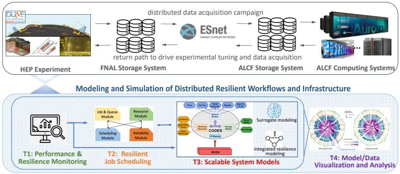

Project Summary
A five-institution collaboration modeling the scalability, performance, and resilience of distributed High Energy Physics computing infrastructure.

The success of DOE "big science" is increasingly tied to data analysis on extreme-scale distributed computing infrastructure. The DOE High Energy Physics (HEP) program in Neutrino and Collider science has been a key driver in applying and adapting data-intensive science and simulation codes to extreme-scale platforms. These complex, highly distributed workflows will continue to push the limits of current and future extreme-scale systems, especially as they evolve to utilize increasingly sophisticated AI/ML techniques for their data analysis. For example, the next generation of neutrino oscillation experiments, led by the DUNE experiment, are based on the liquid argon time project chamber technology. These detectors generate petabytes of high-resolution image data that capture high-energy, complex interactions of neutrinos on argon nuclei and allow for the measurement of fundamental parameters in the neutrino mixing model. The expected data rates for the DUNE far detectors (located 1,000 miles from FNAL) are capable of producing 6 GB of readout data per 5 milliseconds, providing a resolution, fidelity, and data volume nearly 300 times greater than the equivalent interactions being captured with the current generation technologies. Components of this high-fidelity experimental data stream are intended to be analyzed in near real-time, requiring leadership-class computing resources to do so. The hierarchy of complex, high-performance computing, network, and storage components, as well as pathways from the experimental and leadership computing facilities, need to be modeled, analyzed, and tuned to meet the necessary response times and resiliency to disruption under nominal and atypical operational conditions.
To address this modeling grand challenge and build on past successful collaborations, the Tachyon Project five-institution team proposes a framework that enables the scalable modeling, simulation, and validation of key performance characteristics for the Fermilab (FNAL) to Argonne Leadership Computing Facility (ALCF) distributed infrastructure and associated HEP workflows. Our proposed framework is a multi-scale HEP workflow simulation model that will accurately model and predict the end-to-end workflow performance over the wide range of timescales and job/system failure scenarios that a resilient distributed HEP infrastructure must operate now and in the future.
The proposed research program is divided into Core Research Tasks (CRTs) and leverages design outcomes from the DOE EXPRESS Kronos Project as well as the CODES systems modeling framework to integrate complementary modeling methodologies: parallel discrete-event simulation (PDES), surrogate machine learning (ML) models and analytic models into an overall scalable system model (CRT T3). This scalable system model is coupled with extensive facility-supported performance data (CRT T1), resilient job scheduling (CRT T2), and highly informative visualization and performance analysis (CRT T4).
The Tachyon Project will model the entire HEP distributed infrastructure and workflow campaign by creating surrogate ML models that are trained using both historical facility data as well as massively parallel CODES-generated simulation data that has been validated using extensive interactive visualization and analysis of the data and models via facility performance data repositories. By leveraging validated, high-fidelity CODES simulation data, we are able to dramatically increase the predictive range of surrogate ML models beyond the preset job and system configurations contained within current historical performance data repositories.
To capture the importance of resiliency, job placement, and scheduling in our scalable system modeling framework, the CQSim scheduling simulator will be extended and integrated with CODES to enable workflow-centric/facility-centric scheduling and reliability modeling. To address the need for understanding phenomena in both the real distributed infrastructure and the scalable system model, visual analytic methods will be developed for the facility performance data, systems simulators, and surrogate models.
Project Impact
Our proposed scalable system model will have a target accuracy of 90% and perform significantly faster than existing high-fidelity modeling approaches, yielding a highly valuable “what-if” planning tool for future distributed HEP experiments. More broadly, scalable modeling of distributed HEP systems and exploring their stability will allow us to design workflow topologies and operational envelopes which will match the mission demands of other distributed science domains. In turn, the Tachyon Project scalable system modeling framework will maximize the impact of the DOE’s investment in distributed infrastructures like FNAL and ALCF by improving their resiliency and increasing the rate of scientific discoveries across the breadth of the DOE’s experimental and computing resources.